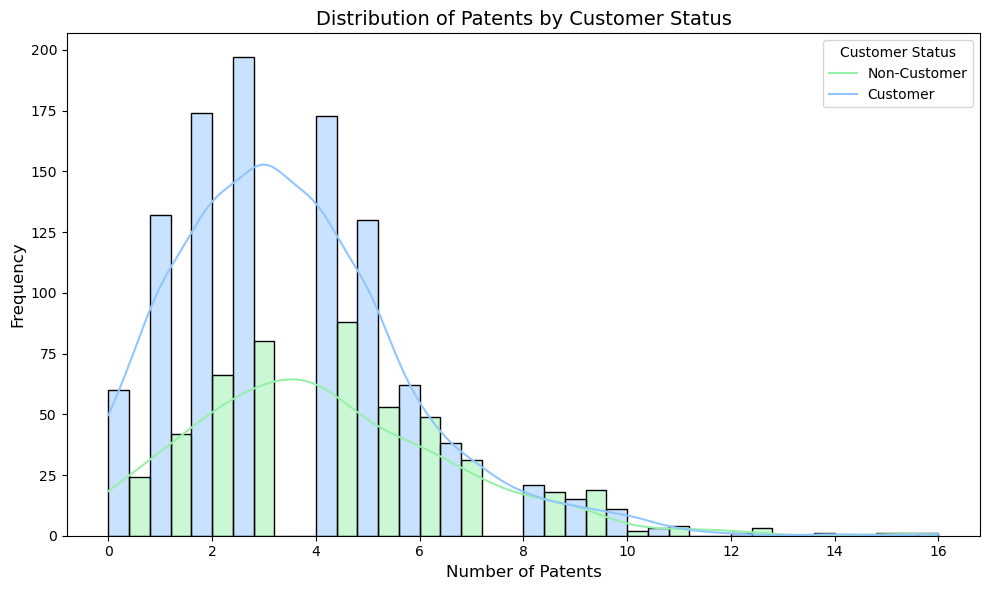
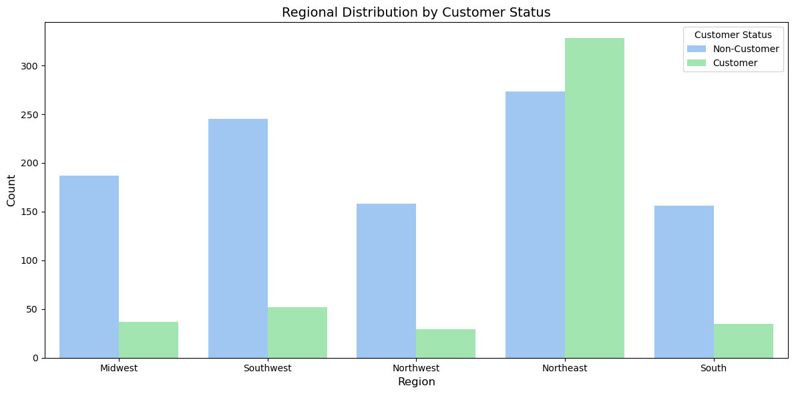
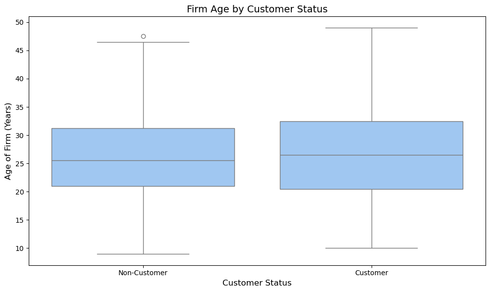
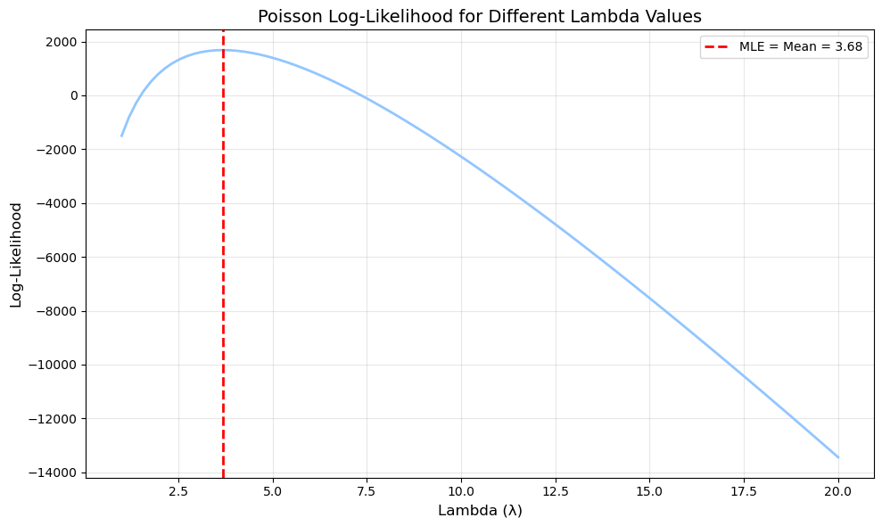
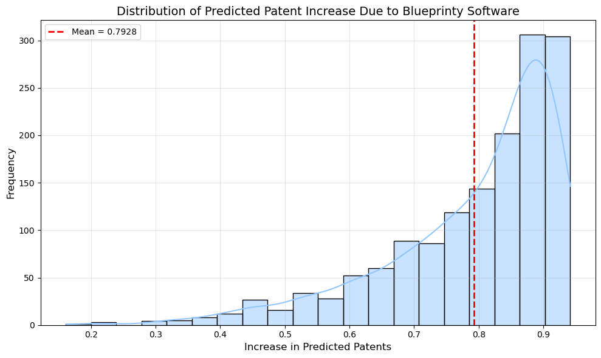

# Import librariesimport pandas as pdimport numpy as npimport matplotlib.pyplot as pltimport seaborn as snsimport scipy.optimize as optimizeimport scipy.stats as statsimport statsmodels.api as smfrom statsmodels.genmod.families import Poisson# Set style for plotsprint(plt.style.available) # Print available stylesplt.style.use('seaborn-v0_8-pastel') # Use a guaranteed style
# Read in data# Read in Blueprinty datablueprinty = pd.read_csv('/home/jovyan/vvwebsite/blog/homework2/blueprinty.csv')blueprinty.head()
patents
region
age
iscustomer
0
0
Midwest
32.5
0
1
3
Southwest
37.5
0
2
4
Northwest
27.0
1
3
3
Northeast
24.5
0
4
3
Southwest
37.0
0
Compare histograms and means of number of patents by customer status. What do you observe?
# Compare histograms and means of number of patents by customer statuscustomer_patents = blueprinty[blueprinty['iscustomer'] ==1]['patents']non_customer_patents = blueprinty[blueprinty['iscustomer'] ==0]['patents']print(f"Mean patents for customers: {customer_patents.mean():.2f}")print(f"Mean patents for non-customers: {non_customer_patents.mean():.2f}")# Create histogramplt.figure(figsize=(10, 6))sns.histplot(data=blueprinty, x='patents', hue='iscustomer', multiple='dodge', kde=True, bins=20)plt.xlabel('Number of Patents', fontsize=12)plt.ylabel('Frequency', fontsize=12)plt.title('Distribution of Patents by Customer Status', fontsize=14)plt.legend(title='Customer Status', labels=['Non-Customer', 'Customer'])plt.tight_layout()plt.show()
Mean patents for customers: 4.13
Mean patents for non-customers: 3.47

Compare regions and ages by customer status. What do you observe?
# Region by customer statusregion_customer = pd.crosstab(blueprinty['region'], blueprinty['iscustomer'], normalize='columns', margins=True)print("Region distribution by customer status (column proportions):")print(region_customer)# Plot region distributionplt.figure(figsize=(12, 6))sns.countplot(x='region', hue='iscustomer', data=blueprinty)plt.xlabel('Region', fontsize=12)plt.ylabel('Count', fontsize=12)plt.title('Regional Distribution by Customer Status', fontsize=14)plt.legend(title='Customer Status', labels=['Non-Customer', 'Customer'])plt.tight_layout()plt.show()# Age by customer statusplt.figure(figsize=(10, 6))sns.boxplot(x='iscustomer', y='age', data=blueprinty)plt.xlabel('Customer Status', fontsize=12)plt.xticks([0, 1], ['Non-Customer', 'Customer'])plt.ylabel('Age of Firm (Years)', fontsize=12)plt.title('Firm Age by Customer Status', fontsize=14)plt.tight_layout()plt.show()# Calculate mean and std of age by customer statusage_stats = blueprinty.groupby('iscustomer')['age'].agg(['mean', 'std'])print("\nAge statistics by customer status:")print(age_stats)
Region distribution by customer status (column proportions):
iscustomer 0 1 All
region
Midwest 0.183513 0.076923 0.149333
Northeast 0.267910 0.681913 0.400667
Northwest 0.155054 0.060291 0.124667
South 0.153091 0.072765 0.127333
Southwest 0.240432 0.108108 0.198000


Age statistics by customer status:
mean std
iscustomer
0 26.101570 6.945426
1 26.900208 7.814678
Write down mathematically the likelihood for \(Y \sim \text{Poisson}(\lambda)\). Note that \(f(Y|\lambda) = e^{-\lambda}\lambda^Y/Y!\). For example:
def poisson_loglikelihood(lambda_val, Y):""" Compute the log-likelihood for a Poisson distribution. Parameters: lambda_val (float): The rate parameter for the Poisson distribution Y (array): The observed count data Returns: float: The log-likelihood value """# Poisson log-likelihood: sum(-lambda + y*log(lambda) - log(y!))# Since log(y!) is constant with respect to lambda, we can omit it for optimizationreturn np.sum(-lambda_val + Y * np.log(lambda_val))
Use your function to plot lambda on the horizontal axis and the likelihood (or log-likelihood) on the vertical axis for a range of lambdas (use the observed number of patents as the input for Y).
# Get observed patent countsY = blueprinty['patents'].values# Create a range of lambda valueslambda_range = np.linspace(1, 20, 100)# Calculate log-likelihood for each lambdaloglik_values = [poisson_loglikelihood(lam, Y) for lam in lambda_range]# Plot the log-likelihood curveplt.figure(figsize=(10, 6))plt.plot(lambda_range, loglik_values, linewidth=2)plt.axvline(x=Y.mean(), color='red', linestyle='--', linewidth=2, label=f'MLE = Mean = {Y.mean():.2f}')plt.xlabel('Lambda (λ)', fontsize=12)plt.ylabel('Log-Likelihood', fontsize=12)plt.title('Poisson Log-Likelihood for Different Lambda Values', fontsize=14)plt.legend()plt.grid(True, alpha=0.3)plt.tight_layout()plt.show()

If you’re feeling mathematical, take the first derivative of your likelihood or log-likelihood, set it equal to zero and solve for lambda. You will find lambda_mle is Ybar, which “feels right” because the mean of a Poisson distribution is lambda.
Find the MLE by optimizing your likelihood function with optim() in R or sp.optimize() in Python.
# Get observed patent countsY = blueprinty['patents'].values# Function to minimize (negative log-likelihood)def neg_loglikelihood(lambda_val):return-poisson_loglikelihood(lambda_val, Y)# Optimize to find MLEresult = optimize.minimize_scalar(neg_loglikelihood, bounds=(0.1, 30), method='bounded')print(f"Mean of observed patents (Y): {Y.mean():.4f}")print(f"MLE of lambda using optimization: {result.x:.4f}")print(f"Maximum log-likelihood value: {-result.fun:.4f}")
Mean of observed patents (Y): 3.6847
MLE of lambda using optimization: 3.6847
Maximum log-likelihood value: 1681.2032
Update your likelihood or log-likelihood function with an additional argument to take in a covariate matrix X. Also change the parameter of the model from lambda to the beta vector. In this model, lambda must be a positive number, so we choose the inverse link function g_inv() to be exp() so that \(\lambda_i = e^{X_i'\beta}\). For example:
poisson_regression_likelihood <- function(beta, Y, X){
...
}
def poisson_regression_loglikelihood(beta, Y, X):""" Compute the log-likelihood for a Poisson regression model. Parameters: beta (array): The regression coefficients Y (array): The observed count data X (array): The covariate matrix Returns: float: The log-likelihood value """# Ensure inputs are numpy arrays X = np.asarray(X) Y = np.asarray(Y)# Calculate lambda_i = exp(X_i * beta) for each observation XB = np.dot(X, beta) # Matrix multiplication lambda_values = np.exp(XB)# Calculate log-likelihood# Handle potential numerical issues log_lambda = np.log(np.maximum(lambda_values, 1e-10)) log_likelihood = np.sum(-lambda_values + Y * log_lambda)return log_likelihood
Use your function along with R’s optim() or Python’s sp.optimize() to find the MLE vector and the Hessian of the Poisson model with covariates. Specifically, the first column of X should be all 1’s to enable a constant term in the model, and the subsequent columns should be age, age squared, binary variables for all but one of the regions, and the binary customer variable. Use the Hessian to find standard errors of the beta parameter estimates and present a table of coefficients and standard errors.
# Prepare data for regression - with data type checking and conversion# First, examine blueprinty data typesprint("Column types before conversion:")print(blueprinty.dtypes)# Create age squaredblueprinty['age_squared'] = blueprinty['age'] **2# Convert all numeric columns to float (handle any potential objects)numeric_cols = ['patents', 'age', 'age_squared']for col in numeric_cols: blueprinty[col] = pd.to_numeric(blueprinty[col], errors='coerce')# Make sure the customer column is numericcustomer_col ='iscustomer'# adjust if your column has a different nameblueprinty[customer_col] = pd.to_numeric(blueprinty[customer_col], errors='coerce')# Check for NaN values after conversionprint("\nMissing values after conversion:")print(blueprinty[numeric_cols + [customer_col]].isna().sum())# Create dummy variables for regions (omitting one as reference)region_dummies = pd.get_dummies(blueprinty['region'], prefix='region', drop_first=True)# Create final dataset - only include rows with complete datacomplete_data = blueprinty.dropna(subset=numeric_cols + [customer_col])print(f"\nRows with complete data: {len(complete_data)} of {len(blueprinty)}")# Combine features - only using numeric columnsX = pd.concat([ region_dummies.loc[complete_data.index], complete_data[['age', 'age_squared', customer_col]]], axis=1)# Make sure all data is properly typedX = X.astype(float)# Add constant termX = sm.add_constant(X)# Response variableY = complete_data['patents'].astype(float)# Fit Poisson regression model model = sm.GLM(Y, X, family=sm.families.Poisson())results = model.fit()# Create a nice coefficient tablecoef_table = pd.DataFrame({'Variable': X.columns,'Coefficient': results.params,'Std.Err': results.bse,'z-value': results.tvalues,'p-value': results.pvalues,'IRR': np.exp(results.params) # Incidence Rate Ratio for interpretation})print("\nPoisson Regression Results:")print(coef_table)# Store the model for later use in calculating effectsbeta_mle = results.params
What do you conclude about the effect of Blueprinty’s software on patent success? Because the beta coefficients are not directly interpretable, it may help to create two fake datasets: X_0 and X_1 where X_0 is the X data but with iscustomer=0 for every observation and X_1 is the X data but with iscustomer=1 for every observation. Then, use X_0 and your fitted model to get the vector of predicted number of patents (y_pred_0) for every firm in the dataset, and use X_1 to get Y_pred_1 for every firm. Then subtract y_pred_1 minus y_pred_0 and take the average of that vector of differences.
# Create two datasets: X_0 (all non-customers) and X_1 (all customers)X_0 = X.copy()X_1 = X.copy()# Set customer statusX_0['iscustomer'] =0X_1['iscustomer'] =1# Calculate predicted lambda values using statsmodels results# (more reliable than using the manual optimization results)lambda_0 = np.exp(np.dot(X_0, results.params))lambda_1 = np.exp(np.dot(X_1, results.params))# Calculate differences in predicted patentsdifferences = lambda_1 - lambda_0# Calculate mean differencemean_difference = np.mean(differences)median_difference = np.median(differences)print("\nEffect of Blueprinty's Software on Number of Patents:")print(f"Mean increase in patents: {mean_difference:.4f}")print(f"Median increase in patents: {median_difference:.4f}")# Show histogram of differencesplt.figure(figsize=(10, 6))sns.histplot(differences, bins=20, kde=True)plt.axvline(x=mean_difference, color='red', linestyle='--', linewidth=2, label=f'Mean = {mean_difference:.4f}')plt.xlabel('Increase in Predicted Patents', fontsize=12)plt.ylabel('Frequency', fontsize=12)plt.title('Distribution of Predicted Patent Increase Due to Blueprinty Software', fontsize=14)plt.legend()plt.grid(True, alpha=0.3)plt.tight_layout()plt.show()
Effect of Blueprinty's Software on Number of Patents:
Mean increase in patents: 0.7928
Median increase in patents: 0.8382

For AirBnb
# Read in AirBnB dataairbnb = pd.read_csv('/home/jovyan/vvwebsite/blog/homework2/airbnb.csv')# Initial data inspectionprint("Initial data shape:", airbnb.shape)print("\nColumn data types:")print(airbnb.dtypes)# Check missing valuesmissing_values = airbnb.isnull().sum().sort_values(ascending=False)missing_percent = (missing_values /len(airbnb)) *100missing_df = pd.DataFrame({'Missing Values': missing_values, 'Percent': missing_percent})print("\nMissing Values Summary:")print(missing_df[missing_df['Missing Values'] >0])# Data preparation with explicit type conversion# Convert numeric columns to proper typesnumeric_cols = ['number_of_reviews', 'days', 'price', 'bathrooms', 'bedrooms', 'review_scores_cleanliness', 'review_scores_location', 'review_scores_value']# Create a clean copy for processingairbnb_processed = airbnb.copy()# Convert all numerics with error handlingfor col in numeric_cols:if col in airbnb_processed.columns: airbnb_processed[col] = pd.to_numeric(airbnb_processed[col], errors='coerce')# Create log transformations of key variablesairbnb_processed['log_days'] = np.log1p(airbnb_processed['days'])airbnb_processed['log_price'] = np.log1p(airbnb_processed['price'])# Convert instant_bookable to numericairbnb_processed['instant_bookable_binary'] = (airbnb_processed['instant_bookable'] =='t').astype(int)# Drop rows with missing values in key modeling variablesmodel_vars = ['number_of_reviews', 'days', 'room_type', 'bathrooms', 'bedrooms', 'price', 'instant_bookable_binary']# Clean dataset for initial model (without review scores)airbnb_clean = airbnb_processed.dropna(subset=model_vars)print(f"\nRows after cleaning essential variables: {len(airbnb_clean)} of {len(airbnb)}")# For models with review scores, create a separate datasetreview_score_vars = ['review_scores_cleanliness', 'review_scores_location', 'review_scores_value']airbnb_with_scores = airbnb_clean.dropna(subset=review_score_vars)print(f"Rows with complete review scores: {len(airbnb_with_scores)} of {len(airbnb_clean)}")# Exploratory Data Analysis# Distribution of number of reviewsplt.figure(figsize=(10, 6))sns.histplot(airbnb_clean['number_of_reviews'], bins=30, kde=True)plt.xlabel('Number of Reviews', fontsize=12)plt.ylabel('Frequency', fontsize=12)plt.title('Distribution of Number of Reviews', fontsize=14)plt.xlim(0, airbnb_clean['number_of_reviews'].quantile(0.95)) # Limit x-axis for better visibilityplt.tight_layout()plt.show()# Distribution by room typeplt.figure(figsize=(10, 6))sns.boxplot(x='room_type', y='number_of_reviews', data=airbnb_clean)plt.xlabel('Room Type', fontsize=12)plt.ylabel('Number of Reviews', fontsize=12)plt.title('Number of Reviews by Room Type', fontsize=14)plt.tight_layout()plt.show()# Distribution by instant bookableplt.figure(figsize=(10, 6))sns.boxplot(x='instant_bookable', y='number_of_reviews', data=airbnb_clean)plt.xlabel('Instant Bookable', fontsize=12)plt.ylabel('Number of Reviews', fontsize=12)plt.title('Number of Reviews by Instant Bookable Status', fontsize=14)plt.tight_layout()plt.show()# Relationship with listing age (days)plt.figure(figsize=(10, 6))plt.scatter(airbnb_clean['log_days'], airbnb_clean['number_of_reviews'], alpha=0.3)plt.xlabel('Log(Days Listed)', fontsize=12)plt.ylabel('Number of Reviews', fontsize=12)plt.title('Number of Reviews vs. Log(Days Listed)', fontsize=14)plt.tight_layout()plt.show()# Correlation matrix for numerical variablesiflen(airbnb_with_scores) >0: # Only if we have data with review scores numeric_vars = ['number_of_reviews', 'log_days', 'log_price', 'bathrooms', 'bedrooms','review_scores_cleanliness', 'review_scores_location', 'review_scores_value']# Make sure all columns exist and are numeric existing_vars = [var for var in numeric_vars if var in airbnb_with_scores.columns] corr_data = airbnb_with_scores[existing_vars].copy() plt.figure(figsize=(10, 8)) corr_matrix = corr_data.corr() mask = np.triu(corr_matrix) sns.heatmap(corr_matrix, annot=True, cmap='coolwarm', mask=mask) plt.title('Correlation Matrix', fontsize=14) plt.tight_layout() plt.show()# MODEL 1: Basic predictors without review scores# Prepare data for modeling with careful type handlingy = airbnb_clean['number_of_reviews'].astype(float)# Create dummy variables for room_typeroom_dummies = pd.get_dummies(airbnb_clean['room_type'], prefix='room', drop_first=True)room_dummies = room_dummies.astype(float) # Ensure numeric type# Define predictor variables and ensure they are numericX1_vars = ['log_days', 'log_price', 'bathrooms', 'bedrooms', 'instant_bookable_binary']X1_data = airbnb_clean[X1_vars].astype(float)# Combine predictorsX1 = pd.concat([X1_data, room_dummies], axis=1)X1 = sm.add_constant(X1)# Verify there are no object dtypes leftprint("\nData types for model variables:")print(X1.dtypes)print(f"Response variable dtype: {y.dtype}")# Fit Poisson regression modelmodel1 = sm.GLM(y, X1, family=sm.families.Poisson())results1 = model1.fit()print("\nPoisson Regression Model 1 (Without Review Scores):")print(results1.summary())# MODEL 2: Including review scores (if we have sufficient data)iflen(airbnb_with_scores) >0:# Prepare data with the same careful type handling y2 = airbnb_with_scores['number_of_reviews'].astype(float)# Create dummy variables room_dummies2 = pd.get_dummies(airbnb_with_scores['room_type'], prefix='room', drop_first=True) room_dummies2 = room_dummies2.astype(float)# Ensure all predictors are numeric X2_vars = ['log_days', 'log_price', 'bathrooms', 'bedrooms', 'instant_bookable_binary', 'review_scores_cleanliness', 'review_scores_location', 'review_scores_value'] X2_data = airbnb_with_scores[X2_vars].astype(float)# Combine predictors X2 = pd.concat([X2_data, room_dummies2], axis=1) X2 = sm.add_constant(X2)# Fit model model2 = sm.GLM(y2, X2, family=sm.families.Poisson()) results2 = model2.fit()print("\nPoisson Regression Model 2 (With Review Scores):")print(results2.summary())# Calculate and plot Incidence Rate Ratios (IRR) for interpretation irr2 = pd.DataFrame({'Variable': X2.columns,'Coefficient': results2.params,'IRR': np.exp(results2.params),'IRR_CI_Lower': np.exp(results2.params -1.96* results2.bse),'IRR_CI_Upper': np.exp(results2.params +1.96* results2.bse),'p-value': results2.pvalues })# Sort by magnitude (exclude intercept) irr_plot = irr2.iloc[1:].sort_values('IRR').copy()# Create IRR plot plt.figure(figsize=(12, 8)) plt.errorbar( irr_plot['IRR'], range(len(irr_plot)), xerr=[irr_plot['IRR'] - irr_plot['IRR_CI_Lower'], irr_plot['IRR_CI_Upper'] - irr_plot['IRR']], fmt='o', capsize=5 ) plt.axvline(x=1, color='red', linestyle='--', linewidth=2, label='No Effect (IRR=1)') plt.yticks(range(len(irr_plot)), irr_plot['Variable']) plt.xlabel('Incidence Rate Ratio', fontsize=12) plt.title('Effect on Number of Reviews (Incidence Rate Ratio)', fontsize=14) plt.grid(True, alpha=0.3) plt.tight_layout() plt.show()# Display IRR table for interpretation irr_sorted = irr2.sort_values('IRR', ascending=False)print("\nIncidence Rate Ratios (sorted by magnitude):")print(irr_sorted[['Variable', 'IRR', 'IRR_CI_Lower', 'IRR_CI_Upper', 'p-value']])
Initial data shape: (40628, 14)
Column data types:
Unnamed: 0 int64
id int64
days int64
last_scraped object
host_since object
room_type object
bathrooms float64
bedrooms float64
price int64
number_of_reviews int64
review_scores_cleanliness float64
review_scores_location float64
review_scores_value float64
instant_bookable object
dtype: object
Missing Values Summary:
Missing Values Percent
review_scores_value 10256 25.243674
review_scores_location 10254 25.238752
review_scores_cleanliness 10195 25.093532
bathrooms 160 0.393817
bedrooms 76 0.187063
host_since 35 0.086147
Rows after cleaning essential variables: 40395 of 40628
Rows with complete review scores: 30160 of 40395